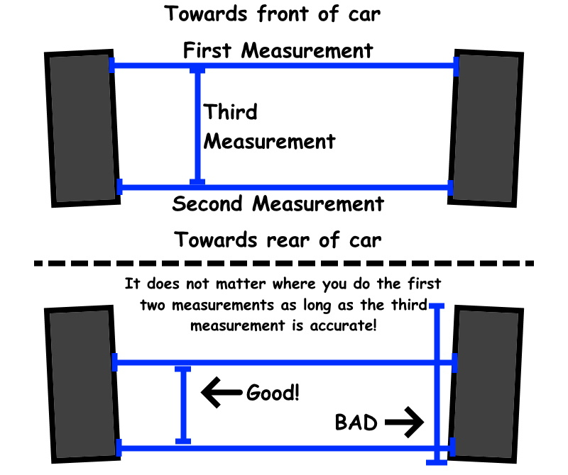

NOTE: This tool calculates total toe and gives an estimated per-wheel toe.
The per-wheel toe assumes both wheels have equal toe angles.
Distance between front of the wheels
Distance between rear of the wheels
Distance between front and rear measurement locations
How to use:
1. Take 2 distance measurements between the opposite wheels.
One towards the front side, and one towards the rear side.
This does not mean the front and rear wheels themselves,
but rather the front/rear side of a singular wheel.
The measurement does not have to be exactly at the ends
of the wheels.
2. Measure the distance between the front and rear points.
3. Enter the measurements above, and hit calculate.
